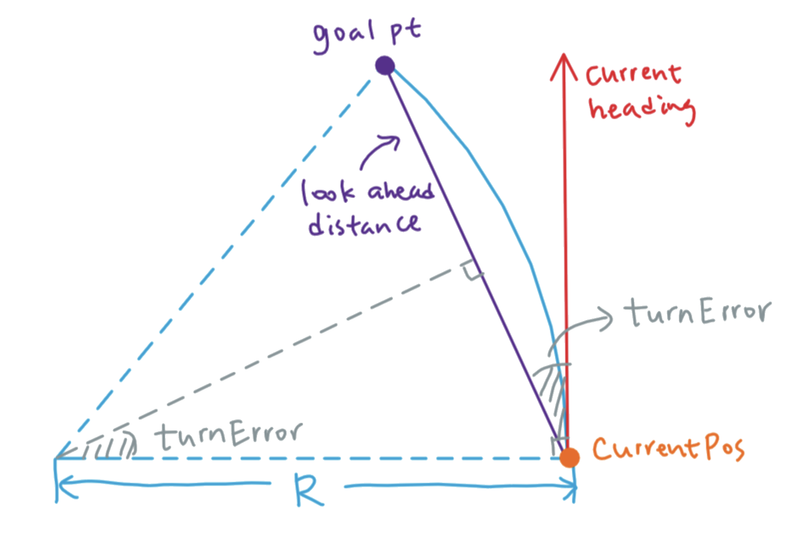
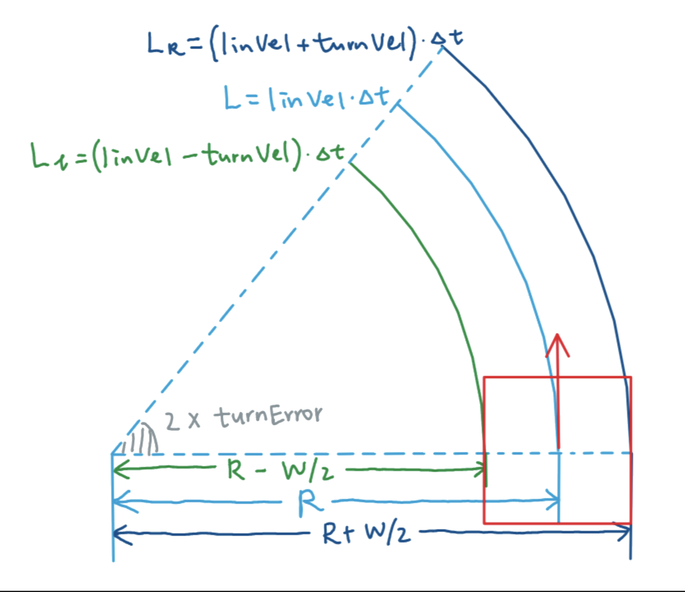

flowchart LR
A["Camera Image"] --> B["Line Detection"]
B --> C["Ground Projection"]
subgraph Baseline_Duckietown ["Baseline Duckietown Stack"]
D["Lane Estimation"] --> E["PID Control"]
end
subgraph Our_Project ["Our Project Stack"]
F["Trajectory Generation"] --> G["Pure Pursuit Control"]
end
C --> D
C --> F
E --> H["Wheel Commands"]
G --> H
Lane Following using Pure Pursuit Control
Abstract
This is a summary of our project results…
Introduction
This project implements lane following on a Duckiebot using trajectory generation and pure pursuit control. The standard Duckietown lane-following stack estimates lane pose (d, \phi) via a histogram filter and applies a PID-style controller on that estimate. In practice, the (d, \phi) measurement can be noisy and discontinuous. Especially under partial occlusions, sparse lane markings, or during turns, which leads to jittery steering and reduced cornering smoothness.
Instead of using (d, \phi), we use perception output (ground-projected lane segments) directly for local path construction. At each time step, we generate a centerline trajectory in the robot frame, apply temporal smoothing, and track the resulting path using pure pursuit control. This replaces explicit lane-state estimation with a path-tracking formulation: control commands are computed directly from the local trajectory, yielding smoother driving through curves.
The baseline stack consists of:
- Line detection: color segmentation (white/yellow/red), edge detection (Canny), and line extraction (Hough) to produce lane-marker segments in the image.
- Ground projection: homography-based mapping from image coordinates to the ground plane using camera calibration.
- Lane estimation: a histogram filter over (d, \phi) that fuses a kinematic prediction with segment-based updates.
- Control: PID-style steering using the estimated (d, \phi), typically with constant forward velocity and angular correction based on lateral and heading error.
We keep line detection and ground projection, but replace the downstream modules:
- Trajectory generation: compute a forward centerline path from projected segments, with robust fitting and temporal smoothing.
- Pure pursuit control: select a lookahead goal point on the path and compute curvature/steering commands to track it.
Over this project we set and achieved these three goals:
- Trajectory generation from detected lane segments, including temporal smoothing for stability.
- Pure pursuit control on the generated trajectory.
- Demonstrate continuous looped driving on a real Duckiebot in the lab Duckietown.
Trajectory Generation
Add info about trajectory generation
We can place images or charts that span the full width or sit in the margin.

Code Block
Because we enabled code folding, this big block won’t clutter the page unless the user clicks “Show Code”.
Code
import numpy as np
a = 1
b = 2
multiple = a * b
# Complex plotting code...Pure Pursuit Control
The second part of the project focused on enhancing the controller node using the “Pure Pursuit” algorithm, which enables the robot to adjust its path before the error accumulates. Similar to PID control, pure pursuit is a steering method that computes the linear (v) and angular velocity (\omega). However, instead of relying on the cross-track error (CTE), the lateral distance between the vehicle and the centerlane, it relies on the pre-computed trajectory as a reference.
The pure pursuit controller consists of two keys steps:
- Goal Point Computation: We determine the goal point to which the robot aims to reach
- Control Commands Computation: We compute the linear and angular velocity required to make the duckie reach the computed goal point
flowchart LR
A[Goal Point Computation] --> B[Control Command Computation]
If you are familiar with the “carrot and stick” analogy, pure pursuit control works fashionably in the same way: we make the robot (the donkey) move towards the goal point (the carrot), which we always keep at a distance L_d, the lookahead distance. If the donkey is too far from the goal point, we “stick” it to the robot and make it turn more aggressively towards the goal point.
Goal Point Calculation - Line-circle intersection algorithm
Many methods can be used to compute the goal point, but we decided to go with the “line-circle intersection” algorithm for its computational simplicity.
Mathematically speaking, the line-circle intersection algorithm tries to find the points where a straight line intersects the circle with radius R.
NoteUnderstanding the maths behind the line-circle intersection algorithm
Given a circle centered at the origin with radius r and points P1(x1, y1) and P2(x2, y2). The implicit line equation for the closed-form geometry can be written as
d_y x - d_x y + D = 0
where
- D=x_1 y_2 - x_2 y_1
- d_x = x_2 - x_1
- d_y = y_2 - y_1
The perpendicular projection of the origin onto the line is:
\begin{aligned} x_0 &= \frac{D d_y}{d_r^2} \\ y_0 &= \frac{-D d_x}{d_r^2} \end{aligned}
where dr= \sqrt{dx^2 + dy^2}
Since the closest point from the origin to the line is a perpendicular projection, we can determine the existence of the intersection using the distance from the origin to the line
\text{dist} = \frac{|D|}{d_r}
- If dist > r, there are no intersection
- If dist = r, one tangent intersection
- If dist < r, there are two intersections
From the right-triangle geometry, we can find the distance along the line from the closest point to each intersection, which we can use to move from the closest point forward and backward along the line
h = \sqrt{r^2 - \left(\frac{D}{d_r}\right)^2}
The unit direction along the line is given by
\hat{\mathbf{u}} = \left( \frac{d_x}{d_r}, \frac{d_y}{d_r} \right)
This gives us the formula to compute the intesection points
\mathbf{P}_{1,2} = \begin{pmatrix} x_0 \\ y_0 \end{pmatrix} \pm h \,\hat{\mathbf{u}}
\begin{aligned} x &= \frac{D d_y \pm d_x \sqrt{r^2 d_r^2 - D^2}}{d_r^2} \\ y &= \frac{-D d_x \pm d_y \sqrt{r^2 d_r^2 - D^2}}{d_r^2} \end{aligned}
Since the line-circle intersection method works for two points only and the trajectory is an array of points, we need to iteratively compute the potential intersections points for contiguous segments as follows
- x=\frac{D dy \pm sgn(dy) dx \sqrt{\Delta}}{L_d^2}
- y=\frac{-D dx \pm \| dy \| \sqrt{\Delta}}{L_d^2}
Where
- dx=x_2-x_1
- dy=y_2-y_1
- dr= \sqrt{dx^2 + dy^2}
- D=x_1 y_2 - x_2 y_1
- \Delta=r^2 dr^2 - D^2
- f(x) = \begin{cases} 0, & x<0 \\ x, & x\ge 0 \end{cases}
To determine the validity of the goal point computed, we can follow the following graph:
flowchart LR
A[Discriminant] -- $$\Delta$$<0 --> B(No intersection Found) --> E;
A -- $$\Delta$$=0 --> C(One Intersection Found);
A -- $$\Delta$$>0 --> D(Two Intersections Found);
E[Use last point in trajectory];
F(Range Check);
G[Select intersection closest to last goal point];
C -- invalid --> E;
D -- both invalid --> E;
D -- one invalid --> C;
D -- both valid --> G;
Essentially, we compute the discriminant \Delta to find valid intersections. The intersection we find is valid if \Delta \ge 0 and if it’s between the trajectory segment points.
The full implementation can be found inside the function find_goal_point()
Control Command Computation - “Follow the carrot” approach (naive)
The first implementation of pure pursuit that we coded kept the linear velocity constant and only accounted for the angular velocity, which was calculated using the turn error between the robot heading and the goal point.
We define 3 parameters:
lookahead_distance: Circle radius at which the duckiebot seeskp: How hard do we want to steer the wheel upon turn errorv_bar: Linear velocity
Consider the following picture,

The turn error can be computed
\alpha = tan(\frac{y_1-y_0}{x_1 - x_0})
Thus,
\omega = kp \cdot \alpha
The code for the “carrot and stick” approach looks something like this:
Code
goal_point, _ = find_goal_point(
path_points,
self.current_pos,
lookahead_distance,
self.last_found_index,
)
dx, dy = (
goal_point[0] - self.current_pos[0],
goal_point[1] - self.current_pos[1],
)
abs_target_angle = math.atan2(dy, dx)
turn_error = abs_target_angle - np.deg2rad(self.current_heading)
L_d = math.sqrt(dx**2 + dy**2)
v = v_bar
omega = kp * turn_errorThe full code implementation can be found in the function compute_control_action()
Results - “Follow the carrot”
Althought this approach is quite simple, we found that it performed relatively well with the right parameters. When driving at lower speed, the duckiebot was able to turn the corner gracefully without too much oscillation. However, as soon as we instruct it to drive a bit faster, it wasn’t very good at turning around corners, especially in the inner lane due to its sharp corners.
Outer Loop:
Inner Loop:
Control Command Computation - Curvature-based approach
In order to improve the duckiebot performance around sharp corners, we wanted to adjust the linear velocity and angle velocity based on curvature. Similarly to how one would drive, we want our duckie to slow down around corner and speed up on when it drives straight ahead. To do so, we used a tangent based approach to find the curvature.
Consider the following picture:

Using trigonometry, we find that
R = \frac{L_d}{2 sin(\alpha)}
NoteDeriving the radius formula
As seen previously, given the current pos P0(x0, y0) and the goal point P1(x1, y1), the turn error \alpha can be computed as
\alpha = tan(\frac{y_1 - y_0}{x_1 - x_0})
Since the goal point is at distance L_d of the current position, the half-way point is at distance \frac{L_d}{2} and thus
R = \frac{\frac{L_d}{2}}{sin(\alpha)} = \frac{L_d}{2 sin (\alpha)}
The curvature k is defined as the inverse of the radius of the arc we want the duckie to travel. Because we want the linear velocity to be inversely proportional to the curvature (the higher the curvature, the lower the speed), we get the following formula for linear velocity
k = \frac{1}{R} v = \bar{v} * \frac{1}{k} = \bar{v} * R
To derive the angular error, now consider the diagram below:

Assuming that the robot finishes the turn after time \delta t, we have that the left side (L_l) and right side (L_R) of the duckie turn with velocity
\begin{aligned} L_l &= (\text{linearVel} - \text{turnVel}) \cdot \Delta t = \left( R - \frac{W}{2} \right) \cdot (2 \cdot \text{turnError}) \\[6pt] L_r &= (\text{linearVel} + \text{turnVel}) \cdot \Delta t = \left( R + \frac{W}{2} \right) \cdot (2 \cdot \text{turnError}) \end{aligned}
Solving for turn velocity, we get that
\frac{(\text{linearVel} - \text{turnVel}) \cdot \Delta t} {(\text{linearVel} + \text{turnVel}) \cdot \Delta t} = \frac{\left( R - \frac{W}{2} \right) \cdot (2 \cdot \text{turnError})} {\left( R + \frac{W}{2} \right) \cdot (2 \cdot \text{turnError})}
\frac{\text{linearVel} - \text{turnVel}} {\text{linearVel} + \text{turnVel}} = \frac{R - \frac{W}{2}} {R + \frac{W}{2}}
\left( R + \frac{W}{2} \right)\text{linearVel} - \left( R + \frac{W}{2} \right)\text{turnVel} = \left( R - \frac{W}{2} \right)\text{linearVel} + \left( R - \frac{W}{2} \right)\text{turnVel}
\text{turnVel} = \frac{W}{2R} \cdot \text{linearVel}
And since R = \frac{\text{lookaheadDistance}}{2 \sin(\text{turnError})}, the turn velocity
\boxed{ \text{turnVel} = \frac{W \sin(\text{turnError})} {\text{lookaheadDistance}} \cdot \text{linearVel} }
Thus, our curvature-based pure pursuit approach uses 4 parameters:
width: width of the duckiebot chassisomega_factor: how hard we want to turn the steering wheel, very similar tokpv_bar: default velocityv_bar_min: minimal linear velocityv_bar_max: maximal linear velocity
Code
dx, dy = (
goal_point[0] - self.current_pos[0],
goal_point[1] - self.current_pos[1],
)
abs_target_angle = math.atan2(dy, dx)
turn_error = abs_target_angle - np.deg2rad(self.current_heading)
L_d = math.sqrt(dx**2 + dy**2)
R = np.abs(L_d / (2.0 * np.sin(turn_error)))
v = np.clip(v_bar * R, v_bar_min, v_bar_max)
omega = omega_factor * (width * np.sin(turn_error) * v) / L_dThe full code can be found here
Results - “Tangent Approach”
Theoritically, the tangent approach should have yielded better results than the “carrot and stick” approach, however, this wasn’t what we observed. After turning around the corner, the tangent approach overcorrected way more than with the naive approach. Additionally, we see that the robot didn’t correct cross-track error and drove near some time on the line before correcting for it.
Outer Loop:
Inner Loop:
Some of these results can be explained because we changed the map on which the duckie drove, which generated a worse trajectory than the test we had generated prior.
Trajectory Outer Loop:
Trajectory Inner Loop:
Results
Add result videos to this section.
Testing
To test the code, first clone the project GitHub repository and follow the steps defined in the README.md file.
git clone git@github.com:kumaradityag/fp-controlIf you followed all the steps in the README.md file, you should have the following: - You have cloned the repo - You have installed the duckietown-shell. You can verify that you have sucessfully installed it using dts --version. If that’s not the case, please follow the instructions here - You have created your virtual duckiebot. You can verify that your virtual duckie exists with the command dts duckiebot virtual start vbot and then dts fleet discover. vbot is the name of our virtual duckie, but feel free to replace it with your own virtual duckie name - You have your real life robot. This step is only required if you want to test the demo in real life. If you want to get your duckie hardware, see the official documentation here
Understanding the project architecture
The most important directories of our projects are packages/trajectory_planner and packages/pure_pursuit_control, which are where our trajectory generation code and our pure pursuit code live.
Testing the project
Virtual and physical duckie have different wheel friction and mass distribution, so they respond to the same parameters differently. Additionally, driving in the inner or outter lane also require different parameters. Therefore, you will probably need to tune your parameters for your own duckiebot.
The configs for the trajectory planner and the pure pursuit controller can be found respectively inside packages/trajectory_planner/config/trajectory_planner_node/default.yaml and packages/pure_pursuit_control/config/pure_pursuit_control_node/default.yaml.
The trajectory planner node has the following parameters: - min_forward: minimum distance at which we consider trajectory points - max_forward: maximum distance at which we consider trajectory points - n_samples: number of samples used for ransac - lane_width: width of the lane in meters - epsilon: error around lane width - yellow_pts_threshold: minimum points in the trajectory for the yellow lane to be valid - white_pts_threshold: minimum points in the trajectory for the white lane to be valid - default_mode: relying on WHITE/YELLOW lane - ransac_max_iterations: number of iterations for ransac to compute inliers - ransac_distance_threshold: how far should ransac sample the points from (in m) - poly_degree: polynomial degree for ransac - buffer_size: number of previous trajectory saved in buffer - buffer_smooth_alpha: float number between 0-1 used to smooth out current trajectory based on the previous one - buffer_theta_threshold: theta angle for which in degrees
The pure pursuit control node has the following parameters: - lookahead_distance: distance at which the pure pursuit controller look ahead (in cm) - v_bar: linear velocity - v_bar_max: maximal linear velocity - v_bar_min: minimal linear velocity - width: chassis width of the duckie. Should stay 0.1 - omega_factor: how hard we want the duckie to turn
Launching the code
Once the parameters have been defined, the code can be launched with the following commands. You will need 4 terminals to view everything needed.
In terminal 1:
cd fp-control
dts fleet discover
dts matrix run --standalone --map ./assets/duckiematrix/map/loop/In terminal 2:
dts matrix attach vbot map_0/vehicle_0
dts devel build -H vbot -f
dts devel run -H vbot -L lane-followingIn terminal 3:
dts gui vbot
# Wait for the entrypoint - inside it run:
rqt_image_view
# Go to /trajectory_planner to see generated trajectoryIn terminal 4:
ssh duckie@vbot.local
# After logging into your duckiebot:
docker exec -it ros-interface bashSome tips: - Instead of re-building the code every time we change the parameters in terminal 2, we can use the command rosparam set <param_name> <value>. The list of params can be found with rosparam list | grep <param_name> - To override the duckie commands, you can open a fifth terminal and use the keyboard control with dts duckiebot keyboard_control vbot. To make the duckie stop, you can click on “emergency stop”.
Testing the project on the virtual duckie
Parameters to drive on the outer lane
TBD
Parameters to drive on the inner lane
TBD
Testing the project on the physical duckie
Parameters to drive on the outer lane
TBD
Parameters to drive on the inner lane
TBD
Conclusion
Limitations
Although our pure pursuit method performed quite well in simulation, its performance in the physical world has substantial room for improvement. The gap between simulation and reality exposed fundamental weaknesses in both our trajectory generation and control algorithms.
Trajectory Generation Limitations
Our trajectory generation is still not robust to sensor noise and environmental variability in the real world. This fragility becomes evident when comparing the real-world performance on the closed inner-loop map and the intersection map. While the duckiebot provided consistent lane boundaries in the virtual environment, our outlier rejection mechanism failed to adequately filter out incorrect lane boundaries introduced by lightning variation and occlusions that occur in the real world, making the trajectory generation algorithm include incorrect boundary detection into its trajectory generation.
Additionally, we saw that the RANSAC line fitting algorithm performance is highly dependent on the parameters being given. The inlier and yellow points threshold required manual tuning for each distinct scenario: the parameters proved effective for inner-loop failed on the outer-loop, forcing us to maintain distinct parameter configuration for different maps, making this approach impractical when dealing with unknown environments. A particularly challenging issue emerged with our inner-loop vs outer-loop boundary selection strategy. Currently, we rely on the inner-boundary (yellow) when driving on the inner lane whereas we rely on the outer-boundary (white) when driving on the outer lane, but real-world scenarios demand dynamic boundary selection. An ideal solution would be to select the most trustworthy boundary based on some quality metrics.
Pure Pursuit Limitations
Despite its computationally efficient, the pure pursuit controller’s performance is highly sensitive to the lookahead distance parameter and greatly impacts our system behavior. Insufficient lookahead distance induces oscillations and overesteering response around minor errors whereas excessive lookahead distance causes aggressive corner-cutting. An adaptive lookahead strategy, where lookahead would be adjusted based on vehicle speed, path curvature and cross-track error performance would address this rigid approach.
More importantly, pure pursuit fundamental flaws lie in its assumption of instantaneous command execution. While this assumption remains somewhat true in simulation, this premise crumbles when the duckie enters the physical world. The robot exhibits non-negligible actuators delay (around 150-200ms from command to execution) and doesn’t account for tire slip that may occur at moderate speed. When faced with sharp maneuvers, the vehicle’s delayed response accumulates tracking error, prompting the controller to correct itself aggressively. This feedback pattern produces jerky driving behavior, which wouldn’t occur in an experienced human driver.
Our attempt at a dynamic control strategy through curvature-based velocity modulation only saw marginal improvements: the duckiebot continued to exhibit harsh braking around tight corners and aggressive acceleration upon exit. This nauseating driving behavior can be explained by the controller’s single optimization objective: minimizing its geometric deviation from the reference path. The controller possesses no notion of passenger comfort and doesn’t adhere to predictable driving norms, which are all behavior needed to drive safely on the road.
What’s next
While our project successfully demonstrated lane-following in a closed loop environment, numerous opportunities exist to extend this foundation toward more robust and sophisticated autonomous navigation. We identified several directions for future development:
Improve Lane Boundaries Detection
We have seen that the current lane boundary detection is still not robust to outliers due to occlusion and lightning variation. Several strategies could be implemented to improve robustness. Temporal filtering could be leveraged to exploit the sequential nature of video suppress transient noise across consecutive frames. Region of interest masking could also be applied to constraint detection only around the region where lanes are expected to appear, which would reduce false positives coming from ceiling and irrelevant background elements. Most importantly, Bayesian filtering such as Kalman filters could be applied to maintain a probabilistic belief for the lane positions and orientation over time. This approach would enable the duckie to “remember” the lane boundaries during a brief occlusion.
Improve Trajectory Generation
The current RANSAC-based approach only minimize geometrical error and doesn’t account for jerky trajectories. Quadratic programming (QP) could be implemented to minimize for both the geometrical error and jerk behavior by defining constraints around velocity, acceleration and curvature limits.
Improving Control Architecture
Pure pursuit works relatively well when we need to control around corner, but only takes into account heading error for more stable control. A naive improvement would be to include both PID and pure pursuit idea and include both cross-track error and heading error, something which Stanley control does quite well. Theoretically, Stanley control would be more stable at higher and lower speed because it would naturally transition between behaviors based on velocity: the heading term would dominate on higher speed and would gradually transition to CTE as it slows down.
Object Detection and Avoidance
Implementing pedestrian detection and integrating dynamic obstacle avoidance would be the first step toward context-aware navigation. Pedestrian detection could be solved using modern deep learning architecture such as YOLO or MobileNet while dynamic obstacle avoidance could be implemented using the Dynamic Window Approach (DWA). DWA samples commands and simulate their execution over a short horizon and selects the command which maximize progress toward the goal point while keeping the trajectory collision-free.
Multi-Agent Coordination
The last step towards context-aware navigation is to add coordination inside the system, that is to make the duckiebot drive around other vehicles. Coordination requires a communication architecture for specific situations, mainly around intersection and traffic light. Simple heuristics around common driving courtesy (no hard breaks, FIFO at 4 points intersection, …) could first be implemented and then decentralized coordination second.